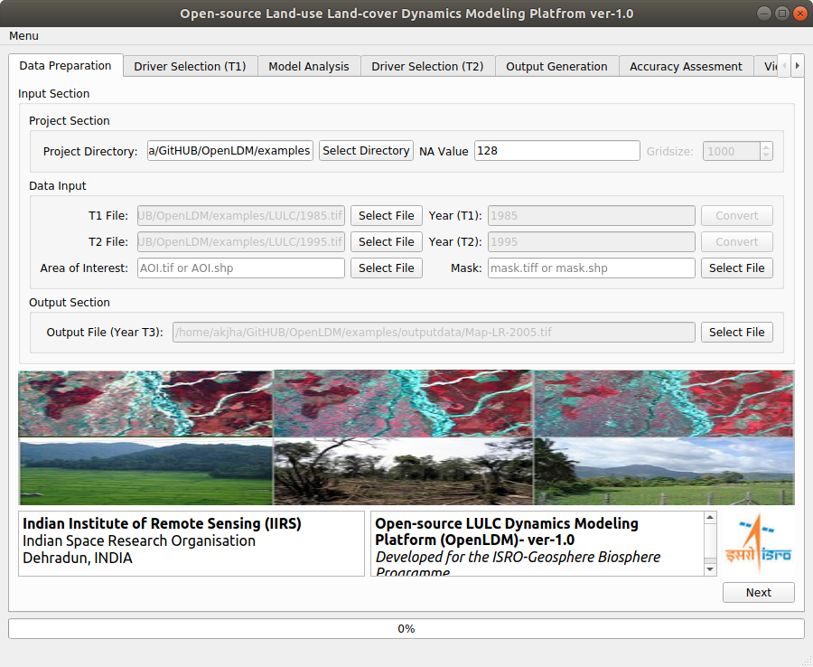

On invoking software, you will see the following screen.

Figure 8
There are five compulsory parameter and other fields are not mandatory. Perform actions as given in Table 2 for each of these parameters.
Table 2
Field |
Action |
T0 File |
Click on and browse to the file example\LULC\1985.tif and select it. |
T1 File |
Click on |
Year (T0) |
Type in 1985 |
Year (T1) |
Type in 1995 |
Output File |
Click on |
Clcik on next |
* Next button gets enabled only after filling all the five mandatory fields.
After providing all the required parameters click “Next” button on bottom right corner.
(OpenLDM) v1.0 IIRS